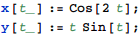

東京大学 2008年 理科 第6問
問題
座標平面に置いて、媒介変数tを用いて
x=cos 2t, y=t sin t (0≤t≤2π)
と表される曲線が囲む領域の面積を求めよ。
解答

曲線の概形は下図。

この曲線と直線x=±1とx軸で囲まれる領域の面積を考える。
x(t)=±1となるのは、t=0,π/2,π,3π/2,2πのときだから、ここで積分区間を分割して、順に とすると、
とすると、


求める面積は


補足・感想
面倒な積分計算はMathematicaにお任せ。